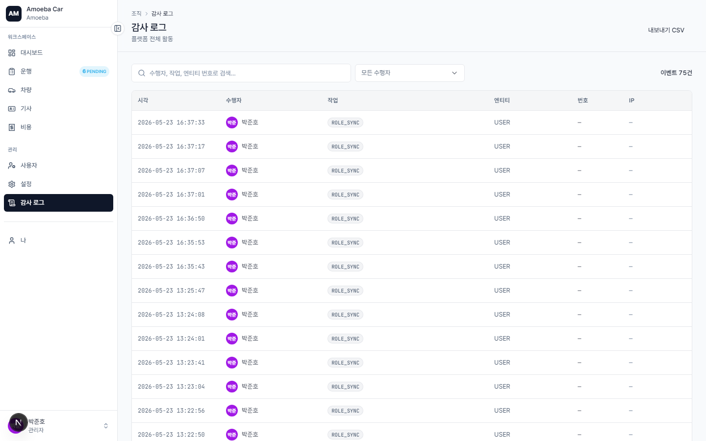

감사 로그 (Audit Log)
🌐
한국어 번역 진행 중 — 이 페이지의 본문 일부는 아직 베트남어입니다. 제목·사이드바·이미지는 한국어로 제공되며, 본문 번역은 점진적으로 업데이트됩니다. 급한 경우 베트남어 원문을 참고하세요.
- URL
/audit- 권한
- Chỉ Admin xem được
- 특성
- Append-only — không thể sửa hoặc xoá. Lưu 5 năm (cấu hình ở /settings).
Audit log ghi lại mọi thao tác làm thay đổi dữ liệu: ai tạo/sửa/xoá trip nào, ai đổi vai trò user, ai sửa cấu hình hệ thống. Đây là nguồn duy nhất để truy vết khi có vấn đề.

Các cột hiển thị
| Cột | Mô tả |
|---|---|
| Thời điểm | Timestamp ISO, múi giờ Asia/Ho_Chi_Minh |
| Người thực hiện | Avatar + tên user, hoặc "system" nếu cron tự động |
| Hành động | Badge mã sự kiện (TRIP.CREATE, EXPENSE.APPROVE, ROLE_CHANGE, …) |
| Thực thể | Loại đối tượng (Trip, Vehicle, User, Expense, …) |
| Mã | ID hoặc tham chiếu (vd TR-1042, 번호판 xe) |
| IP | IP request — giúp phát hiện thao tác bất thường |
Màu badge theo loại hành động
- 🟢 Success — ACCEPT, APPROVE, COMPLETE
- 🔵 Accent — ASSIGN, UPDATE, CREATE
- 🟣 Info — START, END, SYNC
- 🟡 Warning — ALERT, WARN, CONFLICT_OVERRIDDEN
- 🔴 Danger — REJECT, CANCEL, DELETE, ADMIN_EDIT
Bộ lọc
- Tìm theo actor / hành động / mã thực thể — gõ vào ô search
- Lọc theo người thực hiện — dropdown chỉ hiện user nào đã từng tạo event
Xuất CSV
Bấm "Xuất CSV" ở góc trên phải để tải toàn bộ event (kèm bộ lọc) — định dạng phù hợp cho phân tích bằng Excel/Python.
🔒
Không thể xoá audit log — chỉ DB admin với quyền raw SQL mới làm được. Đây là tính năng compliance bắt buộc.
Các mã event thường gặp
| Mã | Ý nghĩa |
|---|---|
TRIP.CREATE | Tạo 운행 mới |
TRIP.ASSIGN | Admin gán driver + vehicle |
TRIP.ACCEPT | 기사 chấp nhận |
TRIP.REJECT | 기사 từ chối (kèm lý do) |
TRIP.START | 기사 bấm "Bắt đầu" |
TRIP.END | 기사 bấm "Kết thúc" |
TRIP.CANCEL | 취소 운행 (Admin hoặc người tạo) |
TRIP.CONFLICT_OVERRIDDEN | Admin save 운행 dù có 알림 xung đột lịch |
EXPENSE.SUBMIT | User nộp chi phí mới |
EXPENSE.ADMIN_EDIT | Admin sửa chi phí của user khác |
VEHICLE.STATUS_CHANGE | Đổi trạng thái xe (AVAILABLE ↔ MAINTENANCE …) |
ROLE_CHANGE | Đổi vai trò app của 1 user |
ROLE_SYNC | Auto-sync vai trò khi user login (system event) |
MAINTENANCE.OIL_OVERDUE | Cron tự gửi alert dầu quá hạn |